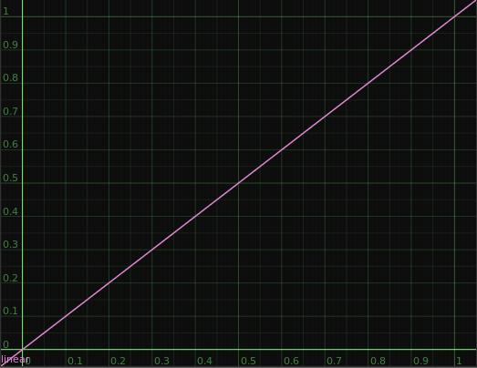
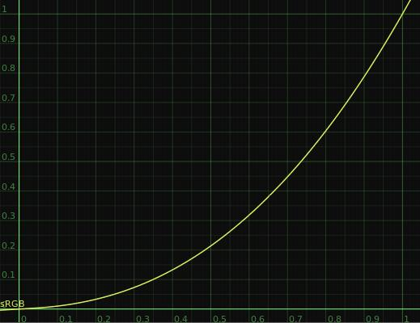
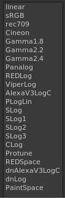

I am doing some gamma tests and I cannot understand some things. I used this image http://www.daniels-photos.com/gray3.bmp . The image has Gamma 2.2 baked in, when I apply it on a grid in Urho using the Unlit material it displays as it is on the picture with some slight difference even with the high quality texture flag. As far as I understand for textures if we do not apply the sRGB flag they will display as their baked gamma. Any colors in Urho3D they display in sRGB if I apply the GammaCorrection camera effect everything is washed out. Is it currently possible to output linear gamma (Gamma 1.0) from everything from Urho3d and apply the sRGB LUT in the end ? I am trying to use this workflow:
[SOLVED] Gamma correction


{kind=link}

Played with your color chart image in my project, here is what i’ve got:
{kind=link}
So if you already implemented gamma correction you have to add sRGB tag to all diffuse textures. What it does is making them a bit darker (converting from gamma space to linear space), then you do all the rendering in linear space, then gamma correction makes final image a bit lighter (converting it from linear back to gamma space).
Thanks guys. My only concern is do you know if the illimination in Urho3d is happening in linear and the sRGB is applied on top or it is assumed that all the illimination will happen in sRGB as this would lead to wrong illumination like the picture from GPU gems. Also is there an option to turn off the sRGB as I want everything in gamma 1.0 and to apply my own LUT in the end as a postprocess.

Just to clarify in the VFX industry we use the term LUT for sRGB as well. What I am looking for is an option or a flag in Urho3d to change the output from sRGB to Linear .
Linear

sRGB

We have these options predefined as well.
LUT

I also still having hard time understanding what are you trying to achieve.
Do you:
a) want to implement linear pipeline?
b) ok with lighting calculations done in gamma space, and just want to alter final image in some way?
To convert from linear to gamma: color=pow(color , 1 / 2.2);
To convert from gamma to linar: color=pow(color , 2.2 ); (adding sRGB tag on textures does it for you)
Thanks guys. It is my mistake I assumed that Urho3d output is sRGB but in fact it is linear. I did a few more careful tests and this is what I found. If I do unlit color to 0.5 0.5 0.5 the output from a grid is 0.498039 0.498039 0.498039. If I apply Gamma 2.2 in the end I am getting 0.729412 0.729412 0.729412 . They both are correct I also tried raw image and the result is the correct again.